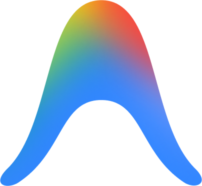

build-memory：建立跨 Agent 的项目记忆层
给你的项目
装上“外挂大脑”
用 5 个文件，构建跨 Agent 与人机协作的统一上下文
每个 Agent 都基于同样的共享上下文工作，三个月后再回来维护代码，你会庆幸它还在。
Pain Points · 为什么要有记忆层？
当项目没有记忆层
Before · 痛点
每天数十个 Session 的困局
- 每开一个新会话，Agent 都要重新读技术栈与约定
- Agent 之间相互隔离，没有共享历史，各自为战
- 做过的决策和踩过的坑，随着窗口关闭全部丢失
- 去找探索过又放弃的路径，就如同大海捞针
After · 解法
轻量、职责分明的文件
- 外化上下文，建立持久的记忆层
- 主从引用 (Master-Mirror)，消除信息漂移
- 沉淀决策上下文：补充 Git History 不记录的“为什么”
- 实现工作留痕与进度跟踪，防止跑偏
Core Files · 职责分明
5个文件 + 1个脚本
AGENTS.md
通用项目事实与规则库。包含技术栈、目录结构及所有重要约定。
CLAUDE.md
Claude 专属入口 (Stub)。仅包含对 AGENTS.md 的单向引用及极少数补充行为约束。
CHANGELOG.md
发布历史。记录版本粒度的、面向用户可见的变更历史。
SESSION_LOG.md
协作日记。记录做过的决策、遇到的问题和调试上下文，实现工作留痕。
TODO.md
用户主导的待办清单。记录开发进度、待办及已完成事项，实现人和 Agent 的对齐。
.memory/session_log.py
日志管理脚本，提供多 Agent 并发写入锁机制与自动归档清理策略。
Scenarios · 使用场景
记忆层解决了哪些痛点？
降低 SESSION 启动成本
把稳定的背景知识变成项目规范，每次启动自动加载，不用从头开始解释架构和技术栈。
降低跨 AGENT 对齐成本
利用规则库对齐目标，用 SESSION_LOG 同步进展。外化的记忆保证了工作过程中的信息互通。
项目知识的沉淀
这不是用来代替 git history，而是补充记录“为什么”。沉淀经验和踩过的坑，方便复盘。
人与 AGENT 的对齐与汇报
共同维护 TODO，人来掌握方向盘；让 Agent 读日志为你自动生成日报或周报。
Workflow · 协同流转
一个完整Session的记忆流
用户指令
通过自然语言下达的新需求或 Bug 修复指令。
规则注入 (AGENTS)
Agent 启动时自动加载技术栈与边界约束。
历史追溯 (LOG)
阅读前置上下文，理解历史决策与当前进展。
多 Agent 协同思考与工作流
写入代码库
Git Commit
记录推导决策
SESSION_LOG.md
更新任务状态
TODO.md
沉淀发布日志
CHANGELOG.md
Install · 安装与运行
三步完成项目接入
获取 Skill 源码
 max-doo/build-memory
max-doo/build-memory
# Git Clone 或直接下载 Zip
$ git clone https://github.com/max-doo/build-memory.git
放入 Skills 目录生效

Claude Code
~/.claude/skills/build-memory/
OpenAI Codex
~/.codex/skills/build-memory/

Cursor IDE
~/.cursor/skills/build-memory/

Antigravity
~/.gemini/config/skills/build-memory/
使用 / 一键调用
/build-memory
自动识别语言，读取项目配置生成上下文骨架。
增量扫描项目变化，更新已有记忆并对齐目标。